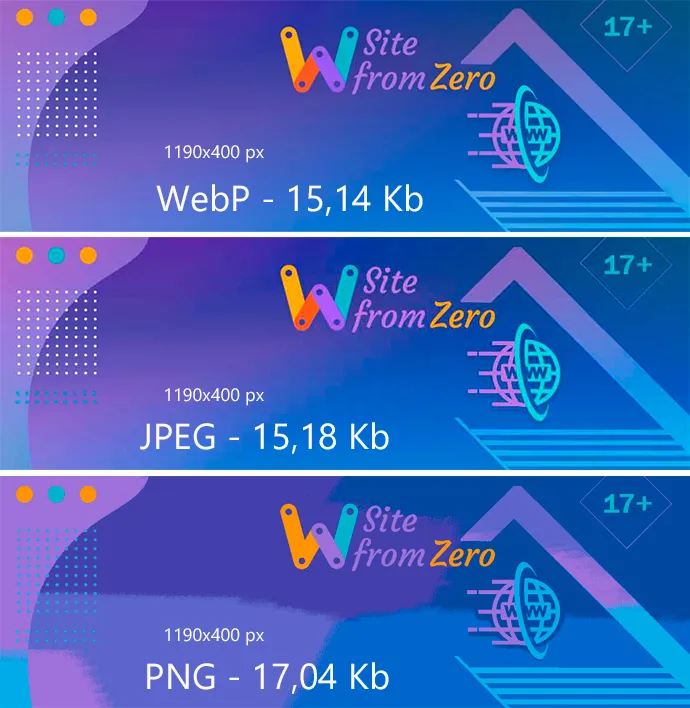

Что такое WebP.
Плюсы и минусы.
WebP — это формат файла, разработанный компанией Google в 2010 году. Его особенностью является продвинутый алгоритм сжатия, позволяющий сократить размер картинки без видимых потерь в качестве. Да, другие форматы тоже поддерживают сжатие, но технологии, стоящие в основе WebP, куда прогрессивнее. И если сравнивать WebP с конкурентами в соотношении степени сжатия к качеству картинки, то разработка Google одержит уверенную победу. В среднем вес картинок сокращается на 25–35%, что позволяет вебмастерам размещать на сайтах больше изображений, не тратя впустую драгоценное пространство на жестком диске
Рассмотрим преимущества:
- более оперативная загрузка страницы для конечного пользователя при прочих равных;
- меньший размер изображения;
- отсутствие потерь качества;
- поддержка прозрачности (как в формате PNG);
- маска альфа-канала;
- переходы с одного цвета в другой более качественные, с минимальной «лесенкой».
Пример:

PNG хорошо справился с тонкими линиями и резкими переходами, но с градиентным фоном и цветопередачей оказался бессильным.
JPEG дал более приемлемый результат, но надо признать, что изображение при сильном сжатии таки «поплыло».
WebP показал себя лучшим как по размеру, так и по качеству. Достаточно плавные переходы, чёткие линии, разборчивые
буквы на порядок выше конкурентов.
Преимущество WebP на картинке очевидно.При сильной степени сжатия сильные мягкие градиенты на JPG становятся пилообразными и появляются артефакты.
Сравним 3 картинки размером(весом) файлов в 20кб
Сразу бросается в глаза потеря качества картинки png, качество WebP по сравнению с JPEG выигрывает.
PNG образец, 21 055 Б (25 КБ на диске)
WEBP образец, 17 072 Б (20 КБ на диске)
Рассмотрим минусы:
- Поддерживается не всеми браузерами — хотя WebP имеет львиную долю браузеров, некоторые все еще не поддерживают его (Internet Explorer медленно принимает его, что является фирменным для Internet Explorer). Существует обходной путь, который включает создание резервного изображения в HTML, но создание целого другого файла в качестве резервной копии иногда сводит на нет все дополнительное пространство для хранения, которое вы экономите с помощью WebP в первую очередь.
- Качество все еще снижается — Это не столько недостаток WebP, сколько недостаток любого сжатия с потерями, качество вашего изображения все равно снижается. Для большинства людей эта сумма ничтожна, но для визуальных сайтов, таких как фотографии или портфолио графического дизайна, вам нужно максимальное качество изображения.
Примеры:
 WebP образец, размер: 56427 Б (57 КБ на диске)
WebP образец, размер: 56427 Б (57 КБ на диске)
 JPEG образец, размер: 57051 Б (57 КБ на диске)
JPEG образец, размер: 57051 Б (57 КБ на диске)
Однозначно победа JPG над WEBP. Обратите внимание, как ухудшается качество свечения и темного фона изображения. Перчинка остаётся без видимых изменений.
Eще один пример:
 WebP образец, размер: 42805 Б (45 КБ на диске)
WebP образец, размер: 42805 Б (45 КБ на диске)
 JPEG образец, размер: 41393 Б (45 КБ на диске)
JPEG образец, размер: 41393 Б (45 КБ на диске)
При равном размере изображения, JPG выигрывает у WEBP. Обратите внимание на детальность прорисовки пор кожи и правый зрачок